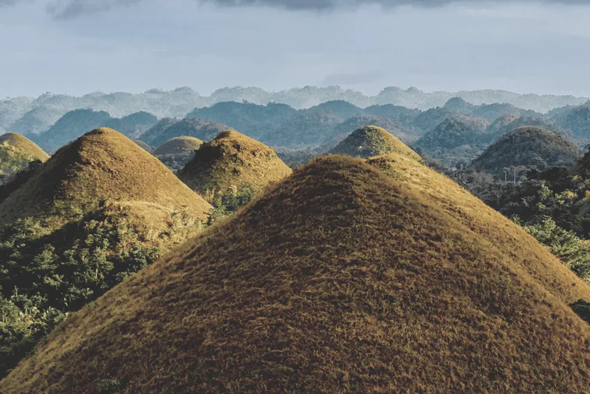

PHILIPPINES
The Philippines, officially the Republic of the Philippines, is an archipelagic country in Southeast Asia.
BORACAY

Boracay is a small island in the central Philippines. It's known for its resorts and beaches. Along the west coast, White Beach is backed by palm trees, bars and restaurants. On the east coast, strong winds make Bulabog Beach a hub for water sports. Nearby, the observation deck on Mount Luho offers panoramic views over the island. Offshore, coral reefs and shipwrecks are home to diverse marine life.
CHOCOLATE HILLS
The Chocolate Hills are a geological formation in the Bohol province of the Philippines. There are at least 1,260 hills, but there may be as many as 1,776 hills spread over an area of more than 50 square kilometers.